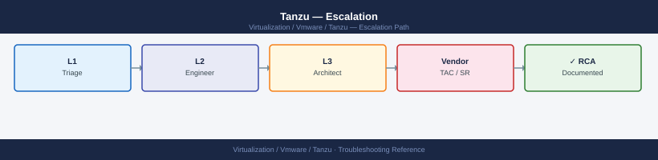

Tanzu — Escalation¶

Before you begin¶
- Access required: Tanzu CLI configured with kubeconfig for the management cluster; kubectl access to affected clusters; Broadcom support account at support.broadcom.com with active TKG/Tanzu entitlement
- Do NOT delete a failed workload cluster without GSS guidance — the cluster VMs may still be running with workloads on them; deletion destroys them without a clean drain
- Do NOT run
tanzu mc resetwithout explicit GSS direction — this factory-resets the management cluster, deleting all workload cluster registration - Collect data from BOTH the management cluster and the affected workload cluster — GSS will need both for any workload cluster issue
Pre-Escalation Self-Check¶
Run these before opening the case.
| Check | Command | Expected result |
|---|---|---|
| Tanzu CLI version | tanzu version |
Note full version string |
| Management cluster health | tanzu cluster list --include-management-cluster |
MC shows Running |
| Workload cluster health | tanzu cluster list |
All WC show Running |
| Cluster node status | kubectl get nodes -A --kubeconfig <cluster-kubeconfig> |
All nodes Ready |
| Pod status | kubectl get pods -A --kubeconfig <cluster-kubeconfig> |
No pods stuck Pending or CrashLoopBackOff |
| Supervisor health (vSphere with Tanzu) | vSphere Client → Workload Management → Supervisors | Supervisor shows Running |
| NSX networking | kubectl get ns -A |
Namespaces accessible |
| Harbor registry health (if used) | Harbor UI → System Health | All components green |
| vCenter version | vCenter → Help → About | Note full vCenter version |
Step-by-Step Data Collection¶
1. Get the Tanzu CLI version and Kubernetes versions¶
# Tanzu CLI version — include in every case description
tanzu version
# Kubernetes versions across clusters
tanzu cluster list --include-management-cluster
kubectl version --kubeconfig <management-cluster-kubeconfig>
# For vSphere with Tanzu: check Supervisor version
kubectl get ns -A 2>&1 | head -20
version: v0.28.1
buildDate: 2024-01-15T09:42:31Z
sha: a3f8c9e2b1d4e5f6g7h8i9j0k1l2m3n4
NAME NAMESPACE STATUS KUBERNETES VERSION
mgmt-cluster-prod tkg-system running v1.27.8+vmware.2
workload-us-west-2 tkg-system running v1.26.5+vmware.1
workload-us-east-1 tkg-system running v1.27.8+vmware.2
Client Version: v1.27.8+vmware.2
Kube-apiserver Version: v1.27.8+vmware.2
Kubelet Version: v1.27.8+vmware.2
NAMESPACE STATUS AGE
vmware-system-csi Active 342d
vmware-system-tkg Active 342d
kube-system Active 342d
kube-public Active 342d
kube-node-lease Active 342d
tanzu-system Active 340d
...
Common errors
| Error | Fix |
|---|---|
error: unable to connect to the server: dial tcp: lookup mgmt-cluster on "10.0.0.1:53": no such host |
Verify the kubeconfig path is correct and the management cluster hostname resolves in your DNS or /etc/hosts. |
error: the server doesn't have a resource type "cluster" |
Ensure you are logged into the correct Tanzu management cluster context with tanzu context list and tanzu context use <context-name>. |
Unable to connect to the vSphere Supervisor: certificate verify failed |
Update your kubeconfig with current credentials using tanzu cluster kubeconfig get <cluster-name> or refresh vSphere credentials in your Tanzu configuration. |
2. Collect the Tanzu diagnostics bundle¶
# Tanzu CLI built-in diagnostics collection
# For management cluster issues:
tanzu diagnostics collect --management-cluster <mgmt-cluster-name>
# For workload cluster issues:
tanzu diagnostics collect --cluster <workload-cluster-name>
# Bundle is saved to the current directory as:
# diagnostics-<cluster-name>-<timestamp>.tar.gz
ls -lh diagnostics-*.tar.gz
# Alternative: collect with verbose logging enabled
TANZU_LOG_LEVEL=debug tanzu cluster get <cluster-name> 2>&1 | tee tanzu-verbose-$(date +%Y%m%d).log
Collecting diagnostics for management cluster 'prod-mgmt-01'...
Gathering cluster information...
Collecting logs from all nodes...
Collecting API server logs...
Collecting controller manager logs...
Diagnostics collection completed successfully.
Bundle saved to: diagnostics-prod-mgmt-01-20240115-143022.tar.gz
-rw-r--r-- 1 admin admin 287M Jan 15 14:30 diagnostics-prod-mgmt-01-20240115-143022.tar.gz
NAME NAMESPACE STATUS READY SEVERITY MESSAGE
prod-mgmt-01 tkg-system running True - Cluster is healthy
Common errors
| Error | Fix |
|---|---|
Error: management cluster '<mgmt-cluster-name>' not found in kubeconfig |
Verify the cluster name matches your kubeconfig context and run tanzu cluster list to confirm available clusters. |
Error: failed to collect logs: permission denied |
Ensure your kubeconfig has sufficient RBAC permissions and run kubectl auth can-i get pods --all-namespaces to verify access. |
Error: diagnostics bundle creation failed: disk space insufficient |
Free up disk space in the current directory (bundles typically require 500MB–2GB) and retry the collection. |
3. Collect the Kubernetes cluster dump¶
# Full cluster dump — all namespaces (can be large)
kubectl cluster-info dump \
--output-directory=/tmp/cluster-dump-$(date +%Y%m%d) \
--all-namespaces \
--kubeconfig <cluster-kubeconfig>
# Compress for upload
tar czf /tmp/cluster-dump-$(date +%Y%m%d).tar.gz /tmp/cluster-dump-$(date +%Y%m%d)/
Clustering info dumped to /tmp/cluster-dump-20240315
Dumping namespaces...
Dumping namespace: default
Dumping namespace: kube-system
Dumping namespace: kube-public
Dumping namespace: kube-node-lease
Dumping namespace: tanzu-system
Dumping namespace: vmware-system-csi
...
Dumping cluster-scoped resources
Dumping events from all namespaces
tar: Removing leading `/' from member names
Common errors
| Error | Fix |
|---|---|
error: unable to connect to the server: dial tcp: lookup <cluster-kubeconfig>: no such host |
Verify the kubeconfig file path is correct and the cluster endpoint is reachable with kubectl cluster-info --kubeconfig <path>. |
mkdir: cannot create directory '/tmp/cluster-dump-20240315': Permission denied |
Run the command with sudo or ensure /tmp is writable by your user with ls -ld /tmp. |
tar: /tmp/cluster-dump-20240315/: Cannot stat: No such file or directory |
Check that the first command completed successfully by verifying the dump directory exists with ls -la /tmp/cluster-dump-*. |
4. Collect vCenter and NSX events for cluster VMs¶
In vSphere Client: navigate to the datacenter or cluster hosting the Tanzu node VMs. - Click Monitor → Events - Filter by the time range covering the failure - Export all events to a CSV file
For NSX-related networking failures:
# In the Supervisor or workload cluster:
kubectl get events -A --sort-by='.lastTimestamp' --kubeconfig <cluster-kubeconfig> | tail -100
# Check pod logs for failing control-plane pods
kubectl get pods -n kube-system --kubeconfig <cluster-kubeconfig>
kubectl logs <failing-pod-name> -n kube-system --kubeconfig <cluster-kubeconfig> | tail -200
NAMESPACE LAST SEEN TYPE REASON OBJECT MESSAGE
kube-system 2m Normal Scheduled pod/etcd-supervisor-1 Successfully assigned to node-1
kube-system 2m Normal Pulled pod/etcd-supervisor-1 Container image "registry.tanzu.vmware.com/tanzu_core/etcd:v3.5.6" already present on machine
kube-system 2m Normal Created pod/etcd-supervisor-1 Created container etcd
kube-system 2m Normal Started pod/etcd-supervisor-1 Started container etcd
kube-system 1m Warning BackOff pod/kube-apiserver-supervisor-1 Back-off restarting failed container
kube-system 45s Warning FailedScheduling pod/coredns-5d78c0869d-xyz9k 0/3 nodes available: 3 Insufficient memory
kube-system 30s Normal NodeReady node/supervisor-1 Node supervisor-1 status is now: NodeReady
kube-system 15s Warning FailedProbeWarning pod/kube-controller-manager-supervisor-1 Readiness probe failed: HTTP probe failed with statuscode: 503
NAME READY STATUS RESTARTS AGE
coredns-5d78c0869d-xyz9k 0/1 Pending 0 8m
etcd-supervisor-1 1/1 Running 0 10m
kube-apiserver-supervisor-1 0/1 CrashLoopBackOff 5 8m
kube-controller-manager-supervisor-1 1/1 Running 2 9m
kube-scheduler-supervisor-1 1/1 Running 0 10m
W0315 14:23:45.123456 12847 client.go:432] WARNING: the server chose to advertise the hostname instead of the IP address
E0315 14:23:47.654321 12847 run.go:74] "Failed to start kube-apiserver" err="listen tcp 10.0.1.45:6443: bind: address already in use"
panic: runtime error: invalid memory address or nil pointer dereference
[signal SIGSEGV: segmentation fault]
goroutine 42 [running]:
main.(*Server).Run(0xc0004a2000, 0x0, 0x0)
/go/src/kubernetes/cmd/kube-apiserver/app/server.go:156 +0x2c8
Common errors
| Error | Fix |
|---|---|
error: the server doesn't have a resource type "events" |
Ensure you have sufficient RBAC permissions and the kubeconfig points to a valid cluster endpoint. |
Unable to connect to the server: dial tcp 10.0.1.45:6443: i/o timeout |
Verify the cluster-kubeconfig path is correct and the Supervisor cluster API server is reachable from your management network. |
pod "kube-apiserver-supervisor-1" not found |
Confirm the pod name matches exactly (use kubectl get pods -n kube-system first) and you are querying |
5. Write the timeline¶
Tanzu CLI version: v0.29.0
TKG version: v2.3.1
Management cluster: tkg-mgmt-01
Platform: TKG on vSphere 8.0
vCenter version: 8.0.2 (build 22385739)
Issue first observed: 2026-06-14 10:30 UTC
Last known good state: 2026-06-14 09:00 UTC
Changes in 24h before the issue:
- 09:00: TKG 2.3.0 → 2.3.1 upgrade applied to the management cluster
- 10:30: All new workload cluster create attempts fail with error:
"Error: Cluster API provider reconciliation failed — machine not provisioning"
- Existing workload clusters are still running
Steps already taken:
- kubectl get nodes -A: MC nodes all show Ready
- tanzu cluster list: existing WCs show Running; new cluster create hangs
- Did NOT delete the failed cluster objects or run tanzu mc reset
Blast radius: New Kubernetes workload cluster creation completely blocked
How to Open the SR on support.broadcom.com¶
-
Go to support.broadcom.com and sign in with your Broadcom account.
-
Click Open a Support Request.
-
Under Product Group, select VMware Cloud Foundation and Virtualization → VMware Tanzu Kubernetes Grid (for TKG standalone or TKGm) or VMware vSphere with Tanzu (for Supervisor-based deployments).
-
Under Version, select your TKG or vSphere version from Step 1.
-
Under Severity, select:
- Severity 1 — Critical: Supervisor completely down; all workload clusters inaccessible; no cluster creation possible; production workloads halted; no workaround
- Severity 2 — High: Management cluster degraded; workload cluster creation failing; significant pod scheduling failures; existing workloads running but degraded
- Severity 3 — Medium: Single workload cluster in error state; Harbor registry down; specific namespace failing; workaround exists
-
Severity 4 — Low: How-to question, pre-upgrade planning, interop compatibility question
-
In the Summary field: TKG version + symptom + scope. Example:
TKG 2.3.1 tkg-mgmt-01 — new workload cluster creation failing after MC upgrade, Cluster API reconciliation error, cluster creation blocked. -
In the Description field, paste:
- TKG CLI version and Kubernetes version from Step 1
- The exact error message from
tanzu cluster listorkubectl get events -
The timeline from Step 5
-
Under Attachments, upload:
- The Tanzu diagnostics bundle from Step 2
-
The Kubernetes cluster dump from Step 3
-
Click Submit. You will receive a case number by email immediately.
-
Severity 1 only: call Broadcom/VMware support after submission:
- North America: +1 877-486-9273 (24×7 for Severity 1)
- EMEA: +44 (0)3453 700 100
- State "Severity 1 — Tanzu Supervisor/management cluster down, production halted" at the start of the call.
Escalation Path¶
Step 1 — Open case at support.broadcom.com with diagnostics bundle attached
↓
Step 2 — T1 support engineer acknowledges (Sev1: < 30 min; Sev2: < 2 hr)
↓
Step 3 — If no meaningful progress in 30 minutes for Sev1 or 2 hours for Sev2:
→ Reply: "Requesting escalation to Tanzu Senior Engineer"
→ State: "[Supervisor down / cluster creation blocked / production halted]"
↓
Step 4 — Tanzu T2 Senior Engineer is assigned; they may request kubectl access
→ Have kubeconfig for the management cluster available for a shared session
→ Have vCenter credentials ready in case the issue involves vSphere networking
↓
Step 5 — If issue involves a specific component:
→ NSX networking issue: GSS may open a parallel NSX case
→ Harbor registry issue: escalates to Harbor team within Broadcom GSS
→ vSphere integration issue: may involve the vSphere team
↓
Step 6 — For Sev1 with no resolution after 2 hours:
→ Request CritSit escalation; contact your Broadcom TAM
What NOT to Do¶
| Do NOT do this | Why | What to do instead |
|---|---|---|
| Delete a failed workload cluster without GSS direction | Cluster VMs may still be running workloads; deletion destroys them without a clean drain | Report the cluster state to GSS; they will direct the exact delete/reprovision sequence |
Run tanzu mc reset without GSS |
Factory-resets the management cluster; deletes all workload cluster registration | Only run if GSS explicitly instructs after all diagnostic data is collected |
kubectl delete pods on the management cluster |
May interrupt Cluster API reconciliation mid-operation | Let GSS diagnose the pod failures before any pod restarts |
| Upgrade the TKG version during an active incident | Changes the version GSS is diagnosing; upgrade may be blocked by the current issue | Freeze all upgrades until the incident is resolved |
| Remove NSX or load balancer integration mid-case | Changes the networking topology GSS is analysing | Hold all infrastructure integration changes until GSS advises |
| Apply Harbor configuration changes during investigation | Changes the registry state if the issue involves Harbor | Freeze all Harbor config changes during the case |
Useful Commands for Case Updates¶
# Cluster state summary — paste into every case update
tanzu version
tanzu cluster list --include-management-cluster
# Management cluster node and pod health
kubectl get nodes -A --kubeconfig <mgmt-kubeconfig>
kubectl get pods -A --kubeconfig <mgmt-kubeconfig> | grep -v Running | grep -v Completed
# Workload cluster node state
kubectl get nodes --kubeconfig <workload-kubeconfig>
# Cluster API machine state (in management cluster)
kubectl get machines -A --kubeconfig <mgmt-kubeconfig>
kubectl get machinedeployments -A --kubeconfig <mgmt-kubeconfig>
# Recent events across all namespaces
kubectl get events -A --sort-by='.lastTimestamp' --kubeconfig <mgmt-kubeconfig> | tail -50
# Package installs (if carvel packages are involved)
tanzu package installed list -A
Expected outputversion: v0.28.1
NAME NAMESPACE STATUS CONTROLPLANE WORKERS KUBERNETES
mgmt-cluster tkg-system running 1/1 3/3 v1.27.5
prod-workload-01 default running 3/3 5/5 v1.27.5
staging-workload-02 default running 1/1 2/2 v1.27.4
NAME STATUS ROLES AGE VERSION
mgmt-node-01 Ready control-plane 45d v1.27.5
mgmt-node-02 Ready worker 45d v1.27.5
mgmt-node-03 Ready worker 45d v1.27.5
prod-wld-cp-xvk9m Ready control-plane 12d v1.27.5
prod-wld-worker-pool-a-abc123 Ready worker 12d v1.27.5
NAMESPACE NAME READY STATUS RESTARTS AGE
kube-system coredns-558bd4d5db-2k8pq 0/1 CrashLoopBackOff 7 3h
kube-system etcd-mgmt-node-01 1/1 Running 0 45d
tkg-system tkr-controller-manager-5d7c8f9b2-lmq9 1/1 Running 0 45d
tanzu-system-auth dex-5f8b9c2d1-9qrs 1/1 Running 0 8d
NAME STATUS ROLES AGE VERSION
prod-wld-cp-xvk9m Ready control-plane 12d v1.27.5
prod-wld-worker-pool-a-abc123 Ready worker 12d v1.27.5
prod-wld-worker-pool-a-def456 Ready worker 12d v1.27.5
NAME PHASE AGE VERSION
mgmt-cluster-control-plane-abc12 Running 45d v1.27.5
prod-workload-01-control-plane-xyz78 Running 12d v1.27.5
prod-workload-01-md-0-worker-def45 Running 12d v1.27.5
NAME REPLICAS UPDATED READY AVAILABLE AGE
prod-workload-01-md-0 5 5 4 4 12d
prod-workload-01-md-1 3 3 3 3 8d
NAMESPACE LAST SEEN TYPE REASON OBJECT
kube-system 3m Warning BackOff pod/coredns-558bd4d5db-2k8pq
kube-system 12m Normal NodeHasSufficientDisk node/mgmt-node-02
tkg-system 8m Warning FailedScheduling pod/new-addon-installer-job-xyz
default 15m Normal SuccessfulCreate machinedeployment/prod-workload-01
¶
version: v0.28.1
NAME NAMESPACE STATUS CONTROLPLANE WORKERS KUBERNETES
mgmt-cluster tkg-system running 1/1 3/3 v1.27.5
prod-workload-01 default running 3/3 5/5 v1.27.5
staging-workload-02 default running 1/1 2/2 v1.27.4
NAME STATUS ROLES AGE VERSION
mgmt-node-01 Ready control-plane 45d v1.27.5
mgmt-node-02 Ready worker 45d v1.27.5
mgmt-node-03 Ready worker 45d v1.27.5
prod-wld-cp-xvk9m Ready control-plane 12d v1.27.5
prod-wld-worker-pool-a-abc123 Ready worker 12d v1.27.5
NAMESPACE NAME READY STATUS RESTARTS AGE
kube-system coredns-558bd4d5db-2k8pq 0/1 CrashLoopBackOff 7 3h
kube-system etcd-mgmt-node-01 1/1 Running 0 45d
tkg-system tkr-controller-manager-5d7c8f9b2-lmq9 1/1 Running 0 45d
tanzu-system-auth dex-5f8b9c2d1-9qrs 1/1 Running 0 8d
NAME STATUS ROLES AGE VERSION
prod-wld-cp-xvk9m Ready control-plane 12d v1.27.5
prod-wld-worker-pool-a-abc123 Ready worker 12d v1.27.5
prod-wld-worker-pool-a-def456 Ready worker 12d v1.27.5
NAME PHASE AGE VERSION
mgmt-cluster-control-plane-abc12 Running 45d v1.27.5
prod-workload-01-control-plane-xyz78 Running 12d v1.27.5
prod-workload-01-md-0-worker-def45 Running 12d v1.27.5
NAME REPLICAS UPDATED READY AVAILABLE AGE
prod-workload-01-md-0 5 5 4 4 12d
prod-workload-01-md-1 3 3 3 3 8d
NAMESPACE LAST SEEN TYPE REASON OBJECT
kube-system 3m Warning BackOff pod/coredns-558bd4d5db-2k8pq
kube-system 12m Normal NodeHasSufficientDisk node/mgmt-node-02
tkg-system 8m Warning FailedScheduling pod/new-addon-installer-job-xyz
default 15m Normal SuccessfulCreate machinedeployment/prod-workload-01
Support SLA Reference¶
| Severity | Definition | Initial Response SLA |
|---|---|---|
| Sev 1 — Critical | Supervisor down; all workloads inaccessible; no cluster creation possible | < 30 min (24×7) |
| Sev 2 — High | MC degraded; WC creation failing; significant scheduling failures | < 2 hours (24×7) |
| Sev 3 — Medium | Single cluster/namespace failing; workaround exists | < 8 hours |
| Sev 4 — Low | How-to, planning, compatibility question | Next business day |
Component-Specific Support¶
| Component | Owner within Broadcom GSS |
|---|---|
| Supervisor / vSphere with Tanzu | vSphere team (may involve NSX team) |
| TKG management / workload cluster | Tanzu team |
| Harbor Registry | Harbor team (within Tanzu group) |
| NSX load balancer (Supervisor) | NSX/NSX ALB team |
| Pinniped authentication | Tanzu team |
| carvel packages | Tanzu team |
See also¶
Verify resolution¶
- Run
tanzu cluster list --include-management-clusterand confirm all clusters showRunning - Run
kubectl get nodes -A --kubeconfig <mgmt-kubeconfig>and confirm all nodes areReady - Attempt to create a new small workload cluster and confirm it provisions successfully
- Run
kubectl get pods -Aon both the MC and an existing WC and confirm no pods stuck inPendingorCrashLoopBackOff - Monitor for 15 minutes to confirm no new failures appear